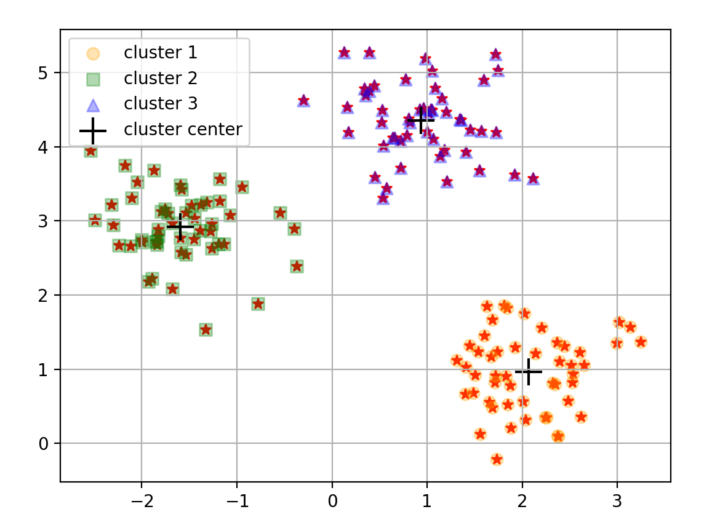

K均值聚类算法
K均值聚类算法
Clustering聚类
聚类是一种无监督学习，它将相似的对象归到同一个簇中，簇内的对象越相似，聚类效果越好，k-均值
K-means聚类算法，可以发现k个不同的簇每个簇的中心采用簇中所含值的均值计算聚类和分类的最大区别是，分类目标事先已知，而聚类则不一样，因为其产生的结果与分类相同，而是只是类别没有预先定义，聚类有时候被称为无监督分类
unsupervised classification聚类分析试图将相似对象归入同一簇，将不相似的对象归到不同簇
相似取决于相似度计算方法
10.1 K-均值聚类算法
优点：易实现
缺点:可能收敛到局部最小值，在大规模数据上收敛比较慢
数据：数值型数据
“””
算法过程描述：
创建k个点作为质心
当任意一个点的簇分配结果发生改变时
对数据中的每个样本点
对每个质心
计算质心到样本点的距离
将该样本点划分到距离其最近的簇
对每个簇计算所有样本的均值作为质心
“””
相关说明：
簇分配结果矩阵
clusterAssment包含 记录簇索引值 列存储误差（点到簇质心的距离)
clusterChanged标志变量 True 则继续迭代如果任意一点的簇分配结果发生改变，则更新标志变量
1 | # -*- coding: utf-8 -*- |
10.2 使用后处理来提高聚类性能

K-均值剧烈中簇的数量k是一个用户预先定义的参数，那么用户如何才能知道k的选择是正确的？如何才能知道生成的簇是比较好的呢？
k-均值算法收敛到局部最小，而不是全局最小
一种用于度量聚类效果的指标是SSE 误差平方和
Sum of Squared ErrorSSE值越小意味着数据点越接近它们的质心，也就是聚类效果越好误差取了平方，因此更加重视那些远离中心的点
一种降低SSE的值的方法是增加簇的数量，但这违背了聚类的目标，聚类的目标是在保持簇数目不变的情况下提高簇的质量
如何对生成的簇进行后处理
- 一种方法是将具有最大SSE值的簇划分成两个簇，具体实现可以将最大簇包含的点过滤出来并在这些点上运行K-均值算法，其中k设为2
- 为了保持簇总数不变，可以将某两个簇进行合并。
- 合并方式：
- 合并最近的质心
- 合并两个使得SSE增幅最小的质心
10.3 二分 K-均值算法
为了克服K-均值算法收敛局部最小的问题，有人提出了二分K-均值的算法
该算法先将所有的点作为一个簇，然后将该簇一分为二，之后选择其中一个簇继续划分，选择哪一个簇进行划分取决于对其划分是否可以最大程度降低SSE值。上述基于SSE的划分过程不断重复，直至得到用户指定的簇数目为止
“””
将所有点看成一个簇
当簇数目小于k时
对每个簇
计算总误差
在给定的簇上面进行K-均值聚类（k=2）
计算将该簇一分为二后的总误差
选择使得误差最小的那个簇进行划分操作
“””
另一个做法就是选择SSE最大的簇进行划分
1 | # -*- coding: utf-8 -*- |
while循环内不断对簇进行划分，直至得到我们想要的簇数目为止（可以 通过簇列表的值来得到簇数目。然后遍历所有簇来决定最佳的簇划分。需要比较划分前后的SSE。
首先设置最小的SSE为inf，然后遍历簇列表
centlist。对每个簇内样本都可以看成一个数据集ptsInCurrCluster。将其输入kMeans内处理，其中k=2。K均值算法会生成两个质心簇，同时给出每个簇的误差值。这些误差与剩余数据的误差之和作为本次划分的误差。由误差之和，决定要划分的簇
对划分簇中所有点的簇分配进行修改，当使用
kMeans函数并且k=2时，会得到两个编号分别为0和1的簇，将簇编号修改为划分簇及新簇的编号更新
10.4 示例 对地图上的点进行聚类
一晚上要去70个地方，你要决定一个将这些地方进行聚类的最佳策略，这样就可以安排交通工具抵达这些簇的中心，然后🚶到每个簇内地址
ps:这里我直接使用
places.txt使用经纬度
对地球坐标聚类
球面距离计算
distSLC()返回地球表面的两点之间的距离
clusterClubs()将文本文件中的俱乐部进行聚类并画出结果
首先创建一幅图和一个矩形，然会使用矩形决定绘制图的哪一个部分，接下来构建一个标记形状的列表用于绘制散点图
imread()基于一幅图像创建矩阵 imshow()绘制矩阵
标记类型从前面创建的scatterMarkers列表中得到。使用索引 i % len(scatterMarkers)来选择标记形状
1 | # -*- coding: utf-8 -*- |
10.5 本章小结
聚类是一种无监督学习。无监督学习是指事先不知道寻找的内容，也就是没有目标变量。聚类将数据点归到多个簇中，其中相似数据点处于同一簇，而不相似数据点处于不同簇，聚类可以使用多种方式计算相似度
K-均值算法，k是用户指定的要创建的簇的数目。k-均值聚类算法以k个随机质心开始 ，算法会计算每个点到质心的距离。每个点会被分配到距离其最近的簇的质心，然后基于新分配到簇的点更新簇质心。以上过程数次重复，直到质心不再改变。算法简单有效，但易受初始质心的影响。
为了更好的聚类效果，可以使用二分K-均值的聚类算法。首先将所有点作为一个簇，然后使用K-均值算法（k=2）对其划分。下次迭代选择有最大误差的簇进行划分。重复过程直至k个簇创建完成。
使用sklearn

1 | # -*- coding: utf-8 -*- |